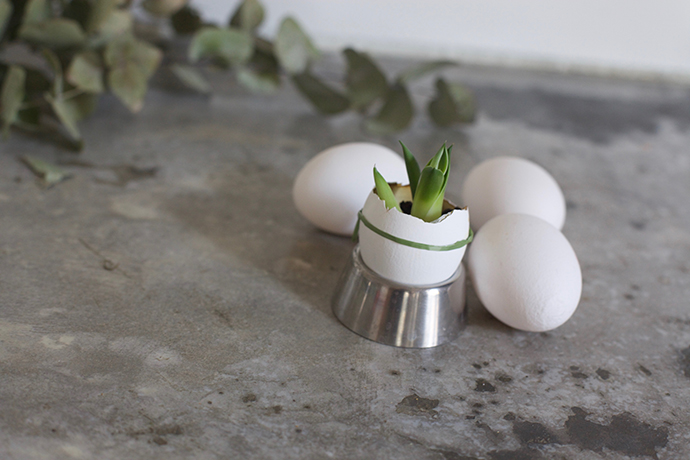

Inicio›Blog›Ocasión›Cactus en cáscara de huevoOcasión · Primavera · PascuaCactus en cáscara de huevo14 marzo, 2017Una decoración de Pascua fácil: pequeños cactus y otras plantas sembrados en huevos.← El libro de semillas de NoahLos R2-D2 de Enrique →